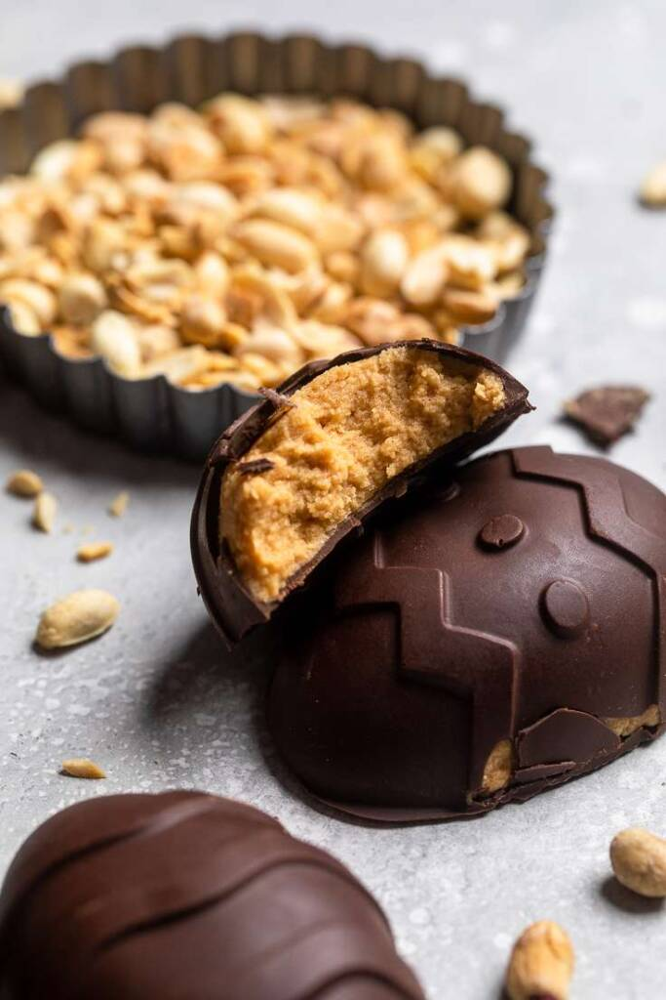

Vegan Peanut Butter Eggs

These easy vegan peanut butter eggs are so easy to make! Perfect chocolate outside with soft peanut butter fudge inside! You’ll love them! Can be Top 8 allergen free if needed. Made by Make it dairy free
Ingredients
- 1 1/2 cups peanut butter (can sub with other nut or sunflower butters)
- 1/4 cup dairy free butter
- 3 tbsp dairy free milk
- 1 tsp vanilla
- 1 cup powered sugar
- 1/4 tsp salt
- 3 cups vegan chocolate chips (semi-sweet, dark or mix of both)
Instructions
- In a large mixing bowl, cream together peanut butter and dairy free butter.
- Add in vanilla and dairy free milk. Beat just until combined.
- Slowly add in the powdered sugar and salt if adding until everything is well combined.
- Fill molds half way with the peanut butter mixture and place in the freezer for 30 minutes.
- When ready, melt vegan chocolate and then dip the frozen peanut butter mixture into the chocolate. Let any excess run off and place back into mold. Alternatively you can add 1-2 tbsp of melted chocolate into the mold, spread up the sides, add peanut butter mixture and then spread more on the top.
- Place in fridge for 30 minutes or until hardened.
- Can be stored at room temperature, in the fridge or in the freezer.